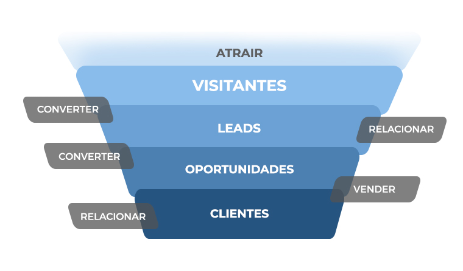

A jornada do cliente é pautada no funil de vendas, que por padrao é:

O topo do funil é a etapa APRENDIZADO E DESCOBERTA. Significa que o potencial comprador ainda está descobrindo que tem um problema a ser solucionado.
O meio do funil é a etapa RECONHECIMENTO DO PROBLEMA. Significa que o potencial comprador reconhece que tem um problema e considera uma solução.
O fundo do funil é a etapa DECISÃO DE COMPRA. Significa que o potencial usuário está no estado de fechar negócio.
Você pode adaptar a jornada do cliente de acordo com as necessidades da sua empresa,
fazendo o seu próprio funil de vendas com as etapas que achar necessárias.
É hora de organizar tudo para por em prática as etapas da jornada.
Crie tarefas para cada uma delas, liste todos os passos que um lead deverá passar até a venda efetiva.
Um exemplo de sequência de etapas de vendas para criar tarefas pode ser:
A partir destas definições, organize o é necessário fazer em cada uma destas etapas,
como organização de prioridades, envio de email, ligação, proposta, etc.
Temos um material muito interessante focado em mercado imobiliário, mas que você pode adaptar ao seu
produto ou serviço. Vale muito a leitura e leva apenas 10 minutos!
UM LEAD ATENDIDO EM ATÉ 5 MINUTOS
TEM 100% DE CHANCE DE RESPOSTA.